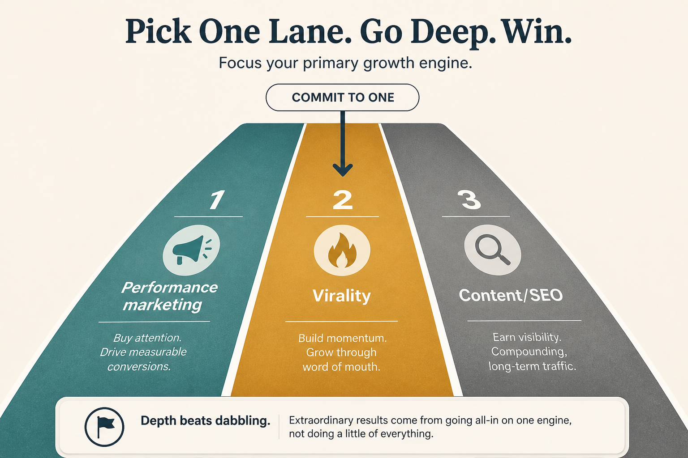

Win one of three consumer growth lanes
Source: Lenny Rachitsky (@lennysan)
original post
What it claims
Successful consumer companies usually scale by excelling at one of three lanes: performance marketing, virality (WOM/invites), or content (SEO). Framework: (1) Validate cheaply — model-fit plus data. (2) Commit real cross-functional resources and let the lane shape the core roadmap. (3) Scale to outrun diminishing returns. Biggest mistake: spreading thin. One world-class lane wins.
Why it matters for a PO
Discovery work often becomes a scatter of “growth tickets.” This forces an explicit lane choice and stops the PO from promising SEO + ads + virality with the same squad.
3 takeaways
- Pick one lane; do not “do a bit of each.”
- Validate with model-fit + data before staffing.
- Commitment means the product roadmap changes, not a side growth experiment.
Practice this week
Name your current primary lane in one line, list evidence it is working (or not), and freeze one in-flight initiative that belongs to a different lane.